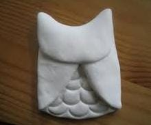

Vamos a empezar
Paso 1 Hacer una bolita y aplastarla para que esté plana.
Paso 2 Con un objeto hacer medios círculos a la mitad
Paso 3 Hacer un dobles en los laterales que queden en medio.
Paso 4 Hace un dobles de la parte de arriba hacia en medio, que queden como piquitos en los lados

Paso 5 Con un objeto hacer dos círculos en la parte de arriba, para que sean sus ojos y otros dos en
medio
Con un objeto hacer una "V" para que sea su boca.